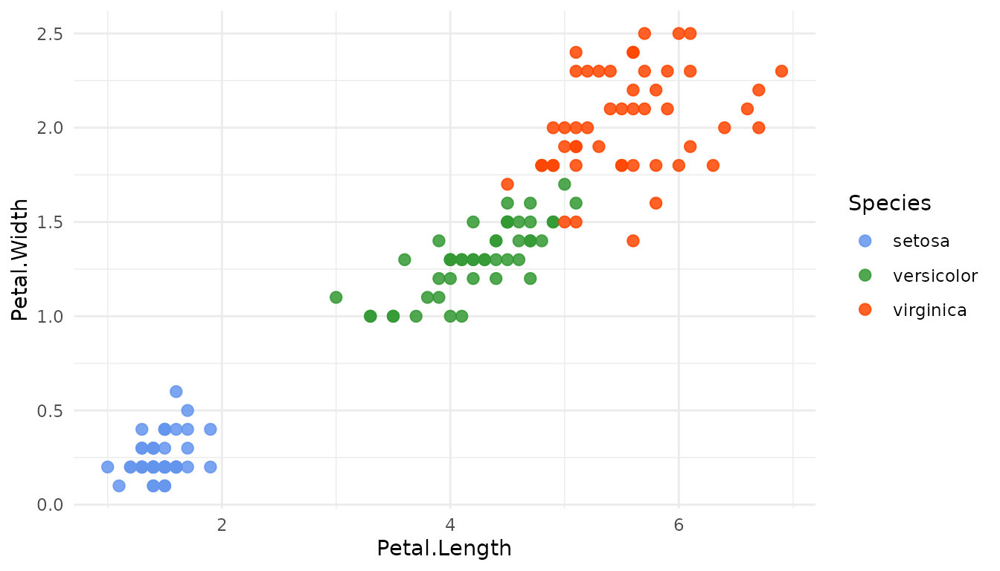
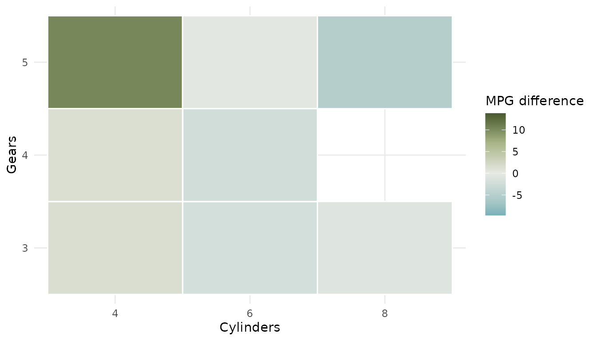

A row of swatches can show which colors a palette contains. It cannot show whether small points remain distinct, thin lines can be followed, neighboring tiles separate cleanly, or a continuous ramp preserves the intended direction. Palette choice is therefore a decision about data semantics and graphical structure, not appearance in isolation.
Tessera is the companion visual catalog for biopalette. It connects three kinds of material:
- palette stories document the source image, extracted colors, ordering, and intended use;
- toy datasets provide stable data for trying a graphic;
- figure recipes explain complete visualizations and their color decisions.
The palette name shown in Tessera is the name used by
get_palette() and the biopalette scale functions in R.
Start with meaning
Choose a palette type before choosing a particular set of colors:
| Data meaning | Palette type | Typical question |
|---|---|---|
| Unordered groups | Qualitative | Which sample, cell type, or treatment? |
| Ordered magnitude | Sequential | How little or how much? |
| Difference around a reference | Diverging | Below or above which center? |
This classification is independent of the ggplot2 aesthetic. Both
color and fill can encode categories or
continuous values; they describe which part of a geometry receives the
palette, not what the palette means.
For example, species are unordered groups, so a qualitative palette is appropriate for either point outlines or box fills:
get_palette("three_body")
#> [1] "#6495ED" "#339933" "#FF4500"Density is ordered from low to high, so a sequential palette is appropriate:
get_palette("mitonuclear_blue", n = 5)
#> [1] "#EEF4FB" "#D4EBF5" "#A7C2E3" "#5478B7" "#155289"A signed effect around zero calls for a diverging palette when negative and positive directions have distinct meaning:
get_palette("walter_white", n = 7)
#> [1] "#1991A9" "#80B3BB" "#BAD1CF" "#E7E9E4" "#BEC7A6" "#889669" "#495A2E"Test the palette in context
Palette Lab applies every Tessera palette to a broad set of preset graphics, including grouped points, lines, bars, distributions, heatmaps, maps, survival curves, embeddings, volcano plots, and Manhattan plots.
The comparison follows a controlled design:
- the dataset remains fixed;
- the variable mapping remains fixed;
- the graphical structure remains fixed;
- only the palette changes;
- every observation remains present.
When a palette does not have enough category colors, Palette Lab shows the unencoded groups with an explicit neutral color instead of dropping data or recycling colors. Sequential and diverging palettes can be interpolated for continuous displays; qualitative palettes remain discrete because a gradient between unordered category colors would imply structure that is not present.
Open a particular palette directly by adding its name to the URL. For example:
Palette Lab runs in the browser and does not participate in package installation or vignette building. biopalette remains fully usable offline.
What to inspect
Do not ask only whether a palette looks attractive. Inspect whether it still communicates correctly under the marks and layout of the intended figure.
Points and thin lines
Small marks expose colors that are distinguishable as swatches but too similar at plotting size. In grouped scatterplots, inspect dense regions and isolated points. In multi-line plots, check whether one series can be followed across the full panel without repeatedly returning to the legend.
ggplot(iris, aes(Petal.Length, Petal.Width, color = Species)) +
geom_point(size = 2.4, alpha = 0.85) +
scale_color_biopalette("three_body") +
theme_minimal()
Large fills and adjacent regions
Bars, boxes, maps, and treemaps give colors much more area. A palette that is pleasant in small marks may become visually dominant when it fills half a page. Check boundaries between adjacent colors and whether labels remain readable over the fill.
Transparency deserves separate attention. Overlapping fills create device- mixed colors that are not additional palette categories. A legend should explain the original groups, not assign new meanings to those overlap colors.
Continuous ramps
For a sequential scale, confirm that the low and high ends appear in the intended order and that intermediate values do not collapse into a narrow lightness range:
ggplot(faithfuld, aes(waiting, eruptions, fill = density)) +
geom_raster() +
scale_fill_biopalette_gradient("mitonuclear_blue") +
theme_minimal()
For a diverging scale, identify the reference value explicitly. The visual center should represent that value rather than merely the midpoint of the observed range:
effect_data <- transform(
mtcars,
cylinders = factor(cyl),
gears = factor(gear),
mpg_difference = mpg - mean(mpg)
)
ggplot(effect_data, aes(cylinders, gears, fill = mpg_difference)) +
geom_tile(color = "white", linewidth = 0.5) +
scale_fill_biopalette_gradient("walter_white", midpoint = 0) +
labs(x = "Cylinders", y = "Gears", fill = "MPG difference") +
theme_minimal()
biopalette uses Lab color space for both palette resampling and
ggplot2 gradients. The colors requested with
get_palette(name, n = ...) therefore follow the same
interpolation convention as the corresponding continuous scale.
Move from Tessera to R
The handoff is intentionally small. After choosing a palette in Tessera or Palette Lab, use the displayed name directly:
# Unordered groups
scale_color_biopalette("three_body")
# Ordered continuous values
scale_fill_biopalette_gradient("mitonuclear_blue")
# Signed values around a meaningful reference
scale_fill_biopalette_gradient("walter_white", midpoint = 0)Use reverse = TRUE if the direction should be flipped.
For discrete scales, biopalette requests the number of colors trained by
the data: qualitative palettes supply the first category colors, while
sequential and diverging palettes sample across the complete ramp.
Each Tessera palette story records more than the HEX vector. Read it when order, source context, or the meaning of an individual color matters. The package supplies a reproducible implementation; the story explains the design decision being reproduced.
What Palette Lab does not decide
Palette Lab is a structured comparison environment, not an automatic approval test. A final figure still needs review in its actual context:
- the palette must match the scientific meaning of the mapped variable;
- labels, shapes, facets, and direct annotation may need to reinforce color;
- accessibility should be checked under relevant color-vision conditions;
- print, projection, and journal production can change apparent contrast;
- a color inherited from a source image does not automatically acquire a biological meaning in a new dataset.
The goal is not to find one palette that wins every preset. It is to expose how a palette behaves before it becomes part of a real analysis.
Related documentation
-
vignette("get-started", package = "biopalette")covers the core R workflow. -
vignette("palette", package = "biopalette")covers custom palette collections. -
?scale_color_biopalettedocuments discrete scales. -
?scale_color_biopalette_gradientdocuments continuous gradients and diverging midpoints.